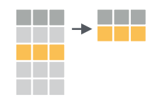

Data Transformation with dplyr
Objectives
- Subset, filter, mutate, group and summarize data with
dplyrfunctions. Highlight base R equivalents. - Understand how to string together multiple functions with the
%>%pipe. - Create plots with both discrete and continuous variables with
ggplot2. - Understand mappings, geometries, and layering in
ggplot2. - Modify the color, theme, and axis labels of a plot.
Loading data
In the previous lesson we used the read_csv() function
to load the gapminder_1997 data. Let’s do that again:
library(tidyverse)
gm97read_csv('data/gapminder_1997.csv')Rows: 142 Columns: 6
── Column specification ─────────────────────────────────────────────────────
Delimiter: ","
chr (2): country, continent
dbl (4): year, pop, lifeExp, gdpPercap
ℹ Use `spec()` to retrieve the full column specification for this data.
ℹ Specify the column types or set `show_col_types = FALSE` to quiet this message.This time, let’s look more closely at the data. If we type the name of the object and evaluate it, we’ll see a preview:
gapminder_1997# A tibble: 142 × 6
country year pop continent lifeExp gdpPercap
<chr> <dbl> <dbl> <chr> <dbl> <dbl>
1 Afghanistan 1997 22227415 Asia 41.8 635.
2 Albania 1997 3428038 Europe 73.0 3193.
3 Algeria 1997 29072015 Africa 69.2 4797.
4 Angola 1997 9875024 Africa 41.0 2277.
5 Argentina 1997 36203463 Americas 73.3 10967.
6 Australia 1997 18565243 Oceania 78.8 26998.
7 Austria 1997 8069876 Europe 77.5 29096.
8 Bahrain 1997 598561 Asia 73.9 20292.
9 Bangladesh 1997 123315288 Asia 59.4 973.
10 Belgium 1997 10199787 Europe 77.5 27561.
# ℹ 132 more rowsCheckpoint
The output shows we have “a tibble” and its dimensions are 142 rows by 6 columns. We then see:
- Column headings (country, year, etc)
- Column data types (chr, dbl, etc)
- The entries of the first 10 rows.
Data in the form of a table is very common in R. The “base R” type is
called a data.frame. The tidyverse extends on
this notion with a tibble. The commands we’ll learn in this
lesson work on data.frames and tibbles. We’ll
use data.frame, tibble, and “data table”
interchangeably throughout the lessons.
Exploring data tables
After reading in data, it’s a good habit to preview it, look at summaries of it, and, in so doing, look for issues. When data contains hundreds of rows, it’s a good idea to get a sense for the values and ranges of the data.
Get stats with summary()
The summary() function, from base R, takes a data table
as input and will summarize the columns automatically depending on their
data type.
summary(gapminder_1997) country year pop continent
Length:142 Min. :1997 Min. :1.456e+05 Length:142
Class :character 1st Qu.:1997 1st Qu.:3.770e+06 Class :character
Mode :character Median :1997 Median :9.735e+06 Mode :character
Mean :1997 Mean :3.884e+07
3rd Qu.:1997 3rd Qu.:2.431e+07
Max. :1997 Max. :1.230e+09
lifeExp gdpPercap
Min. :36.09 Min. : 312.2
1st Qu.:55.63 1st Qu.: 1366.8
Median :69.39 Median : 4781.8
Mean :65.01 Mean : 9090.2
3rd Qu.:74.17 3rd Qu.:12022.9
Max. :80.69 Max. :41283.2 We see that for the numeric data we get quantile information and the mean, whereas for character data we simply get the length of the column. For data with NAs, the number thereof would be displayed.
Get stats with summarize()
If we wanted to know the mean life expectancy in the dataset, we
could use the the dplyr summarize() function,
specifying that we want the mean():
summarize(gapminder_1997, avgLifeExp = mean(lifeExp))# A tibble: 1 × 1
avgLifeExp
<dbl>
1 65.0We can use any column name as the input to mean(), so
long as it’s a numeric, and we get a new tibble with our value returned
as a column, named as specified. Note, this matches the result of
summary() with some difference in the number of significant
digits displayed. Alternatively, we could have simply applied
mean() directly to the column lifeExp:
mean(gm97lifeExp)[1] 65.01468This is the base R way, with the $ being how columns of
a data table are accessed. The mean() function returns a
number, whereas summarize() returns a tibble.
In the tidyverse, a function whose input is a
tibble will also have a tibble as output.
Checkpoint
Tip: Reference columns by name
While it is possible to access columns by their numerical index, this is less prefereable than using the explicit name of the column because altering the table could change the column indices. Depending on the situation, we might not even get an error, and instead would be simply operating on the wrong column. A dangerous situation to be in.
Find unique values with distinct()

Data is often subject to errors. To quickly catch data entry
problems, the distinct() function can be used to show all
unique values in the column of a table. Let’s take a look at the
distinct values of the continents column:
distinct(gapminder_1997, continent)# A tibble: 5 × 1
continent
<chr>
1 Asia
2 Europe
3 Africa
4 Americas
5 Oceania Here we get a tibble back with the unique continent
names in their order of appearance. There is an equivalent base R way to
do this with the unique() function:
unique(gm97continent)[1] "Asia" "Europe" "Africa" "Americas" "Oceania" Either way, if there was a misspelled entry, for example, “Urope” we would have immediately seen it.
Checkpoint
Sorting data with arrange()

We have a rich dataset whose default ordering is by country. But it’s
natural to ask questions like “What country has the highest life
expectancy?” or “What country had the highest GDP per capita?” The
arrange() function can help us quickly find the
answers.
arrange(gapminder_1997, lifeExp)# A tibble: 142 × 6
country year pop continent lifeExp gdpPercap
<chr> <dbl> <dbl> <chr> <dbl> <dbl>
1 Rwanda 1997 7212583 Africa 36.1 590.
2 Sierra Leone 1997 4578212 Africa 39.9 575.
3 Zambia 1997 9417789 Africa 40.2 1071.
4 Angola 1997 9875024 Africa 41.0 2277.
5 Afghanistan 1997 22227415 Asia 41.8 635.
6 Liberia 1997 2200725 Africa 42.2 609.
7 Congo Dem. Rep. 1997 47798986 Africa 42.6 312.
8 Somalia 1997 6633514 Africa 43.8 931.
9 Uganda 1997 21210254 Africa 44.6 817.
10 Guinea-Bissau 1997 1193708 Africa 44.9 797.
# ℹ 132 more rowsThis seems to have done an ascending order on lifeExp by
default. We have some options, one of which is to wrap the column of
interest in the desc() function to indicate we want the
order to be descending.
arrange(gapminder_1997, desc(lifeExp))# A tibble: 142 × 6
country year pop continent lifeExp gdpPercap
<chr> <dbl> <dbl> <chr> <dbl> <dbl>
1 Japan 1997 125956499 Asia 80.7 28817.
2 Hong Kong China 1997 6495918 Asia 80 28378.
3 Sweden 1997 8897619 Europe 79.4 25267.
4 Switzerland 1997 7193761 Europe 79.4 32135.
5 Iceland 1997 271192 Europe 79.0 28061.
6 Australia 1997 18565243 Oceania 78.8 26998.
7 Italy 1997 57479469 Europe 78.8 24675.
8 Spain 1997 39855442 Europe 78.8 20445.
9 France 1997 58623428 Europe 78.6 25890.
10 Canada 1997 30305843 Americas 78.6 28955.
# ℹ 132 more rowsAnd here we see that Japan is the country with the longest lived citizens at a little over 80 years.
Checkpoint
Exercise
Which country has the highest GDP per capita in 1997?
arrange(gapminder_1997, desc(gdpPercap))# A tibble: 142 × 6 country year pop continent lifeExp gdpPercap <chr> <dbl> <dbl> <chr> <dbl> <dbl> 1 Norway 1997 4405672 Europe 78.3 41283. 2 Kuwait 1997 1765345 Asia 76.2 40301. 3 United States 1997 272911760 Americas 76.8 35767. 4 Singapore 1997 3802309 Asia 77.2 33519. 5 Switzerland 1997 7193761 Europe 79.4 32135. 6 Netherlands 1997 15604464 Europe 78.0 30246. 7 Denmark 1997 5283663 Europe 76.1 29804. 8 Austria 1997 8069876 Europe 77.5 29096. 9 Canada 1997 30305843 Americas 78.6 28955. 10 Japan 1997 125956499 Asia 80.7 28817. # ℹ 132 more rows
Subset columns with select()
Sometimes data tables have many columns, and it can be useful to
select only a few of them to export, use downstream, preview, etc. The
select() function works on columns:
select(gapminder_1997, country, year, lifeExp)# A tibble: 142 × 3
country year lifeExp
<chr> <dbl> <dbl>
1 Afghanistan 1997 41.8
2 Albania 1997 73.0
3 Algeria 1997 69.2
4 Angola 1997 41.0
5 Argentina 1997 73.3
6 Australia 1997 78.8
7 Austria 1997 77.5
8 Bahrain 1997 73.9
9 Bangladesh 1997 59.4
10 Belgium 1997 77.5
# ℹ 132 more rowsWe can do the equivalent of select() statement using
base R with:
gapminder_1997[ , c('country', 'year', 'lifeExp')]# A tibble: 142 × 3
country year lifeExp
<chr> <dbl> <dbl>
1 Afghanistan 1997 41.8
2 Albania 1997 73.0
3 Algeria 1997 69.2
4 Angola 1997 41.0
5 Argentina 1997 73.3
6 Australia 1997 78.8
7 Austria 1997 77.5
8 Bahrain 1997 73.9
9 Bangladesh 1997 59.4
10 Belgium 1997 77.5
# ℹ 132 more rowsHere we use the square-bracket notation again, leaving the row
position blank returns all rows, and in the column position we specify
the names of the columns as a vector with the c() function,
meaning “combine”, creates a temporary vector of column names. Note that
we quoted the column names in this code, whereas in
select() we didn’t have to.
Checkpoint
Columns can be removed using select() with a “minus” in
front of the column name.
select(gapminder_1997, -year)# A tibble: 142 × 5
country pop continent lifeExp gdpPercap
<chr> <dbl> <chr> <dbl> <dbl>
1 Afghanistan 22227415 Asia 41.8 635.
2 Albania 3428038 Europe 73.0 3193.
3 Algeria 29072015 Africa 69.2 4797.
4 Angola 9875024 Africa 41.0 2277.
5 Argentina 36203463 Americas 73.3 10967.
6 Australia 18565243 Oceania 78.8 26998.
7 Austria 8069876 Europe 77.5 29096.
8 Bahrain 598561 Asia 73.9 20292.
9 Bangladesh 123315288 Asia 59.4 973.
10 Belgium 10199787 Europe 77.5 27561.
# ℹ 132 more rowsNotice the year column is no longer displayed.
Saving objects
If we view gapminder_1997 we notice haven’t changed the
original data because we haven’t saved the object.
gapminder_1997# A tibble: 142 × 6
country year pop continent lifeExp gdpPercap
<chr> <dbl> <dbl> <chr> <dbl> <dbl>
1 Afghanistan 1997 22227415 Asia 41.8 635.
2 Albania 1997 3428038 Europe 73.0 3193.
3 Algeria 1997 29072015 Africa 69.2 4797.
4 Angola 1997 9875024 Africa 41.0 2277.
5 Argentina 1997 36203463 Americas 73.3 10967.
6 Australia 1997 18565243 Oceania 78.8 26998.
7 Austria 1997 8069876 Europe 77.5 29096.
8 Bahrain 1997 598561 Asia 73.9 20292.
9 Bangladesh 1997 123315288 Asia 59.4 973.
10 Belgium 1997 10199787 Europe 77.5 27561.
# ℹ 132 more rowsTo manipulate gapminder_1997 and save it as a new object
we have to assign it a new object name:
gapminder_column_subset = select(gapminder_1997, country, year, lifeExp)
gapminder_column_subset# A tibble: 142 × 3
country year lifeExp
<chr> <dbl> <dbl>
1 Afghanistan 1997 41.8
2 Albania 1997 73.0
3 Algeria 1997 69.2
4 Angola 1997 41.0
5 Argentina 1997 73.3
6 Australia 1997 78.8
7 Austria 1997 77.5
8 Bahrain 1997 73.9
9 Bangladesh 1997 59.4
10 Belgium 1997 77.5
# ℹ 132 more rowsSaving objects to file
The original data file we read in
data/gapminder_1997.csv remains the same throughout all
these manipulations. What happens in R stays in R until we explicitly
write a new object to the same file. It’s good practice to keep
raw input data separate, and to never overwrite it. Let’s use
the write_csv() function to write the
gapminder_column_subset data to a file. First let’s look at
?write_csv and determine what are the required
parameters.
It looks like x, the data to be written and
file, the path to the output file are required. There are
other options, but we won’t use them here.
write_csv(gapminder_column_subset, file = 'gapminder_column_subset.csv')Checkpoint
Narrow down rows with filter()

We have seen that select() subsets the columns of a
table. The function filter() subsets the rows of a data
table based on logical criteria. So first, a note about logical
operators in R:
| Operator | Description | Example |
|---|---|---|
| < | less than | pop < 575990 |
| <= | less than or equal to | pop <= 575990 |
| > | greater than | pop > 1000000 |
| >= | greater than or equal to | pop >= 38000000 |
| == | exactly equal to | continent == 'Africa' |
| != | not equal to | continent != 'Asia' |
| !x | not x | !(continent == 'Africa') |
| a | b | a or b | pop < 575990 | pop > 1000000 |
| a & b | a and b | continent == 'Asia' & continent == 'Africa' |
| a %in% b | a in b | continent %in% c('Asia', 'Africa') |
With these operators in mind we can filter the
gapminder_1997 data table in a variety of ways. To filter
for only the African data we could:
filter(gapminder_1997, continent == 'Africa')# A tibble: 52 × 6
country year pop continent lifeExp gdpPercap
<chr> <dbl> <dbl> <chr> <dbl> <dbl>
1 Algeria 1997 29072015 Africa 69.2 4797.
2 Angola 1997 9875024 Africa 41.0 2277.
3 Benin 1997 6066080 Africa 54.8 1233.
4 Botswana 1997 1536536 Africa 52.6 8647.
5 Burkina Faso 1997 10352843 Africa 50.3 946.
6 Burundi 1997 6121610 Africa 45.3 463.
7 Cameroon 1997 14195809 Africa 52.2 1694.
8 Central African Republic 1997 3696513 Africa 46.1 741.
9 Chad 1997 7562011 Africa 51.6 1005.
10 Comoros 1997 527982 Africa 60.7 1174.
# ℹ 42 more rowsThe base R equivalent of the above uses the square bracket notation that we saw earlier with a twist:
gapminder_1997[gm97continent == 'Africa', ]# A tibble: 52 × 6
country year pop continent lifeExp gdpPercap
<chr> <dbl> <dbl> <chr> <dbl> <dbl>
1 Algeria 1997 29072015 Africa 69.2 4797.
2 Angola 1997 9875024 Africa 41.0 2277.
3 Benin 1997 6066080 Africa 54.8 1233.
4 Botswana 1997 1536536 Africa 52.6 8647.
5 Burkina Faso 1997 10352843 Africa 50.3 946.
6 Burundi 1997 6121610 Africa 45.3 463.
7 Cameroon 1997 14195809 Africa 52.2 1694.
8 Central African Republic 1997 3696513 Africa 46.1 741.
9 Chad 1997 7562011 Africa 51.6 1005.
10 Comoros 1997 527982 Africa 60.7 1174.
# ℹ 42 more rowsHere we put the condition in the row position, before the comma, because we want to subset rows. The blank after the comma indicates we want all the columns returned.
Exercise
How can we filter the data for just the United Kingdom?
filter(gapminder_1997, country == 'United Kingdom')# A tibble: 1 × 6 country year pop continent lifeExp gdpPercap <chr> <dbl> <dbl> <chr> <dbl> <dbl> 1 United Kingdom 1997 58808266 Europe 77.2 26075.
We can answer the question, “Which African countries have population
over 10,000,000?” by using the & operator with our
previous code. This requires both conditions to be true at the same
time:
filter(gapminder_1997, continent == 'Africa' & pop >= 10000000)# A tibble: 19 × 6
country year pop continent lifeExp gdpPercap
<chr> <dbl> <dbl> <chr> <dbl> <dbl>
1 Algeria 1997 29072015 Africa 69.2 4797.
2 Burkina Faso 1997 10352843 Africa 50.3 946.
3 Cameroon 1997 14195809 Africa 52.2 1694.
4 Congo Dem. Rep. 1997 47798986 Africa 42.6 312.
5 Cote d'Ivoire 1997 14625967 Africa 48.0 1786.
6 Egypt 1997 66134291 Africa 67.2 4173.
7 Ethiopia 1997 59861301 Africa 49.4 516.
8 Ghana 1997 18418288 Africa 58.6 1005.
9 Kenya 1997 28263827 Africa 54.4 1360.
10 Madagascar 1997 14165114 Africa 55.0 986.
11 Malawi 1997 10419991 Africa 47.5 692.
12 Morocco 1997 28529501 Africa 67.7 2982.
13 Mozambique 1997 16603334 Africa 46.3 472.
14 Nigeria 1997 106207839 Africa 47.5 1625.
15 South Africa 1997 42835005 Africa 60.2 7479.
16 Sudan 1997 32160729 Africa 55.4 1632.
17 Tanzania 1997 30686889 Africa 48.5 789.
18 Uganda 1997 21210254 Africa 44.6 817.
19 Zimbabwe 1997 11404948 Africa 46.8 792.We can subset the data for very large or very small population with
the | operator, which requires either condition to be
true:
filter(gapminder_1997, pop <= 1000000 | pop >= 1000000000)# A tibble: 9 × 6
country year pop continent lifeExp gdpPercap
<chr> <dbl> <dbl> <chr> <dbl> <dbl>
1 Bahrain 1997 598561 Asia 73.9 20292.
2 China 1997 1230075000 Asia 70.4 2289.
3 Comoros 1997 527982 Africa 60.7 1174.
4 Djibouti 1997 417908 Africa 53.2 1895.
5 Equatorial Guinea 1997 439971 Africa 48.2 2814.
6 Iceland 1997 271192 Europe 79.0 28061.
7 Montenegro 1997 692651 Europe 75.4 6466.
8 Reunion 1997 684810 Africa 74.8 6072.
9 Sao Tome and Principe 1997 145608 Africa 63.3 1339.This gives us all the countries with fewer than a million people or more than a billion people.
Checkpoint
Make new columns with mutate()
It’s common to use existing columns of a data table to create new
columns. For example, in the gapminder_1997 data we have a
pop column and a gdpPercap column. We could
multiply these two columns to get a new gdp column. The
dplyr function mutate() adds columns to an
existing data table.
mutate(gapminder_1997, gdp = pop * gdpPercap)# A tibble: 142 × 7
country year pop continent lifeExp gdpPercap gdp
<chr> <dbl> <dbl> <chr> <dbl> <dbl> <dbl>
1 Afghanistan 1997 22227415 Asia 41.8 635. 14121995875.
2 Albania 1997 3428038 Europe 73.0 3193. 10945912519.
3 Algeria 1997 29072015 Africa 69.2 4797. 139467033682.
4 Angola 1997 9875024 Africa 41.0 2277. 22486820881.
5 Argentina 1997 36203463 Americas 73.3 10967. 397053586287.
6 Australia 1997 18565243 Oceania 78.8 26998. 501223252921.
7 Austria 1997 8069876 Europe 77.5 29096. 234800471832.
8 Bahrain 1997 598561 Asia 73.9 20292. 12146009862.
9 Bangladesh 1997 123315288 Asia 59.4 973. 119957417048.
10 Belgium 1997 10199787 Europe 77.5 27561. 281118335091.
# ℹ 132 more rowsAs before, this didn’t actually add the column to
gapminder_1997, we have to save the object to store it:
gapminder_gdp_1997 = mutate(gapminder_1997, gdp = pop * gdpPercap)
gapminder_gdp_1997# A tibble: 142 × 7
country year pop continent lifeExp gdpPercap gdp
<chr> <dbl> <dbl> <chr> <dbl> <dbl> <dbl>
1 Afghanistan 1997 22227415 Asia 41.8 635. 14121995875.
2 Albania 1997 3428038 Europe 73.0 3193. 10945912519.
3 Algeria 1997 29072015 Africa 69.2 4797. 139467033682.
4 Angola 1997 9875024 Africa 41.0 2277. 22486820881.
5 Argentina 1997 36203463 Americas 73.3 10967. 397053586287.
6 Australia 1997 18565243 Oceania 78.8 26998. 501223252921.
7 Austria 1997 8069876 Europe 77.5 29096. 234800471832.
8 Bahrain 1997 598561 Asia 73.9 20292. 12146009862.
9 Bangladesh 1997 123315288 Asia 59.4 973. 119957417048.
10 Belgium 1997 10199787 Europe 77.5 27561. 281118335091.
# ℹ 132 more rowsCheckpoint
Combine functions with the %>% pipe
We’ve learned how to subset rows with filter(), select
columns with select(), get distinct elements with
distinct(), and summarize columns with
summarize(). It’s common to use these functions in
sequence, where the output of one becomes the input of the next. The
concept of “pipe” (|) from bash has an
equivalent in the tidyverse in the %>%
symbol. To see this in action, let’s select data from Oceania and
display only the country, continent, and
pop columns.
gapminder_1997 %>% filter(continent == 'Oceania') %>% select(country, continent, pop)# A tibble: 2 × 3
country continent pop
<chr> <chr> <dbl>
1 Australia Oceania 18565243
2 New Zealand Oceania 3676187Question
Does the order of
filter()andselect()matter? Would something like the following work, why or why not?gapminder_1997 %>% select(country, pop) %>% filter(continent == 'Oceania')
It seems there are only two countries, Australia and New Zealand. If
we wanted to take the mean of the populations we could pipe the data,
after filtering, to summarize() as in:
gapminder_1997 %>%
filter(continent == 'Oceania') %>%
summarize(oceania_mean_pop = mean(pop))# A tibble: 1 × 1
oceania_mean_pop
<dbl>
1 11120715Note this is distinct from taking the mean over the entire dataset:
gapminder_1997 %>% summarize(global_mean_pop = mean(pop))# A tibble: 1 × 1
global_mean_pop
<dbl>
1 38839468.Here we’ve meaningfully named our output, but that was optional. For quick data exploration that could be left off.
Checkpoint
Group rows with group_by()
If we wanted to determine the mean populations over all the
continents, we could run the above code we used for Oceania, but replace
Oceania with each continent name. That’s a bit tedious, and the
tidyverse provides a very nice function,
group_by(), that breaks a data table up into groups and
will perform operations within the groups.
gapminder_1997 %>%
group_by(continent) %>%
summarize(mean_pop = mean(pop))# A tibble: 5 × 2
continent mean_pop
<chr> <dbl>
1 Africa 14304480.
2 Americas 31876016.
3 Asia 102523803.
4 Europe 18964805.
5 Oceania 11120715 Notice that the Oceania average matches what we got above. Going back
to our Oceania subset, we can use group_by() with the
counting function n() to count how many countries there are
per continent in the gapminder_1997 data, and verify that
there really only are two:
gapminder_1997 %>%
group_by(continent) %>%
summarize(num_countries_per_continent = n())# A tibble: 5 × 2
continent num_countries_per_continent
<chr> <int>
1 Africa 52
2 Americas 25
3 Asia 33
4 Europe 30
5 Oceania 2There is a base R function, table(), that tabulates the
number of time an entry occurs in a vector, and is useful for quick
sanity checking:
table(gm97continent)
Africa Americas Asia Europe Oceania
52 25 33 30 2 Checkpoint
Exercise
In summarizing data, it’s often useful to build a nicely formatted table with min, median, and max values of a variable. Below is an example of code to do that for the populations by continent, and arranged by the median population.
gapminder_1997 %>% group_by(continent) %>% summarize( min_POP = min(pop), median_POP = median(pop), max_POP = max(pop) ) %>% arrange(median_POP)# A tibble: 5 × 4 continent min_POP median_POP max_POP <chr> <dbl> <dbl> <dbl> 1 Africa 145608 7805422. 106207839 2 Americas 1138101 7992357 272911760 3 Europe 271192 9527017 82011073 4 Oceania 3676187 11120715 18565243 5 Asia 598561 21229759 1230075000Try to write the code that would generate the following table, similar to the above, but for the GDP per continent instead of the population, including the mean GDP in addition to the min, median, and max, as well as ordering the results by mean GDP.
# A tibble: 5 × 5 continent min_GDP mean_GDP median_GDP max_GDP <chr> <dbl> <dbl> <dbl> <dbl> 1 Africa 194980183. 30023173824. 8190364646. 3.20e11 2 Oceania 77385257446. 289304255183. 289304255183. 5.01e11 3 Europe 4478413552. 383606933833. 172462904126. 2.28e12 4 Asia 4745744246. 387597655323. 105396057842. 3.63e12 5 Americas 9276089515. 582693307146. 45924427025. 9.76e12
| Previous lesson | Top of this lesson | Next lesson |
|---|